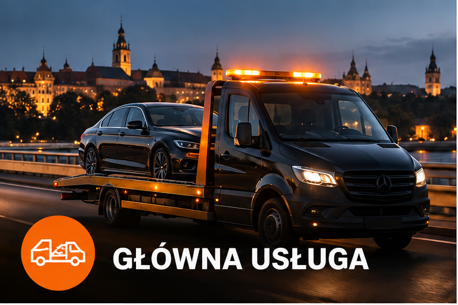
Holowanie samochodów osobowych. Szybki kontakt i bezpieczny transport do wskazanego miejsca.
- ✓ Lublin i okolice
- ✓ Dostępność 24/7
- ✓ Bezpieczny transport
AWARIA • WYPADEK • KOLIZJA • SZYBKI DOJAZD
☎ZADZWOŃ TERAZ+48 866 126 125→Jedna rozmowa wystarczy, żeby ustalić miejsce i zakres potrzebnej pomocy.

Holowanie samochodów osobowych. Szybki kontakt i bezpieczny transport do wskazanego miejsca.
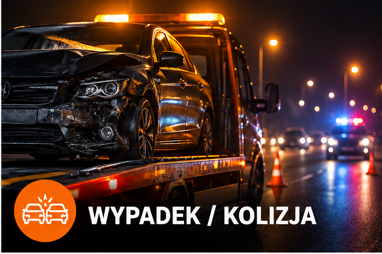
Transport uszkodzonych samochodów po zdarzeniach drogowych oraz pomoc w organizacji bezpiecznego przewozu.
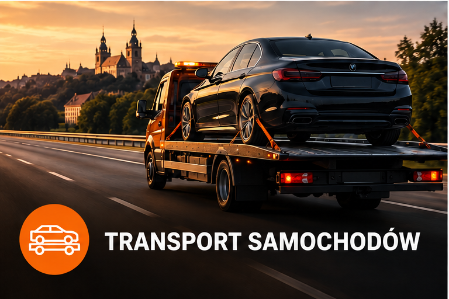
Przewóz samochodu na terenie Lublina i do uzgodnionego miejsca.
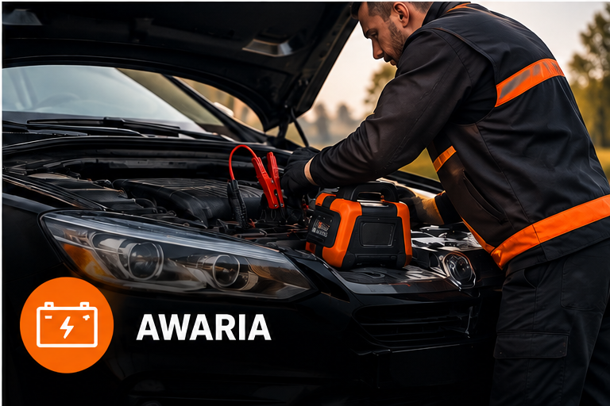
Problemy z uruchomieniem samochodu? Zadzwoń i opisz sytuację.
Awaria, wypadek czy kolizja? Zadzwoń. Ustalimy lokalizację i zakres potrzebnej pomocy, a następnie skierujemy pomoc na wskazane miejsce.
☎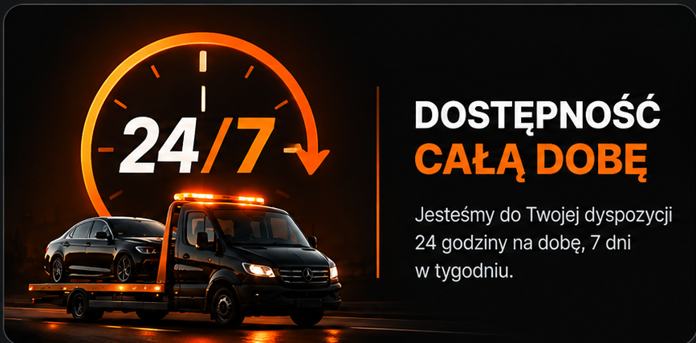
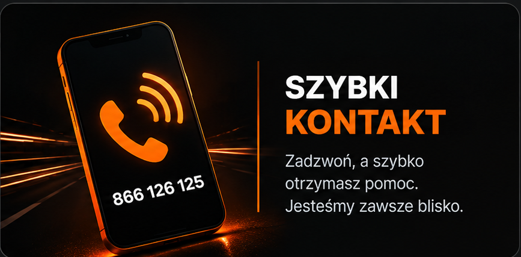
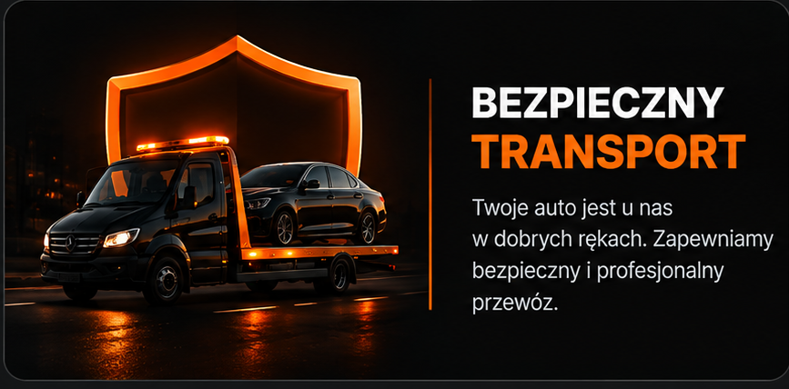
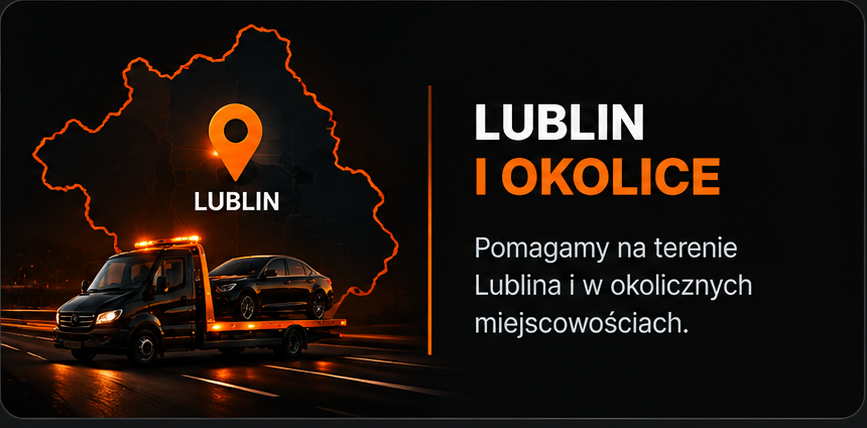
Bez zbędnych formalności. Kontaktujesz się z nami, podajesz lokalizację i ustalamy sposób transportu samochodu.
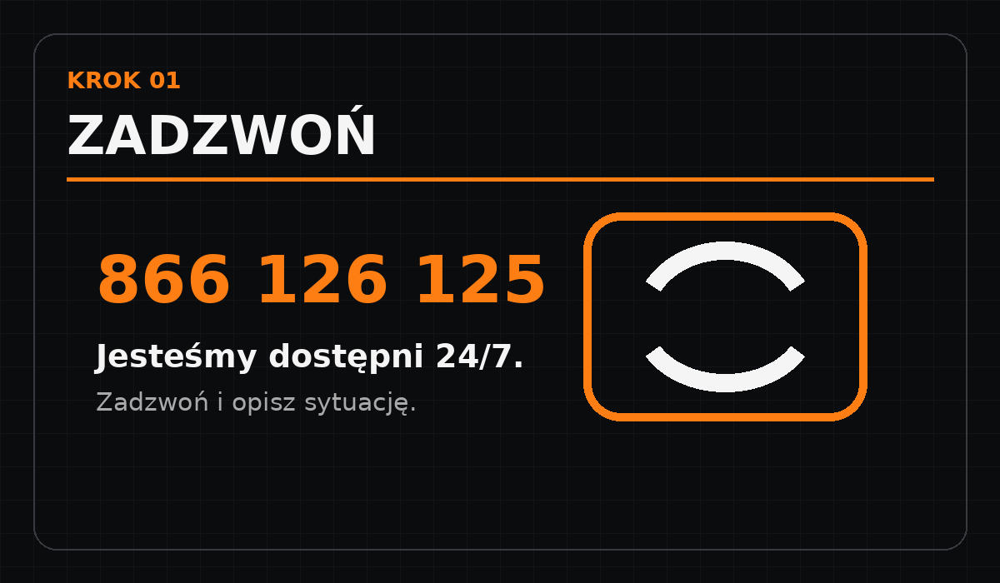
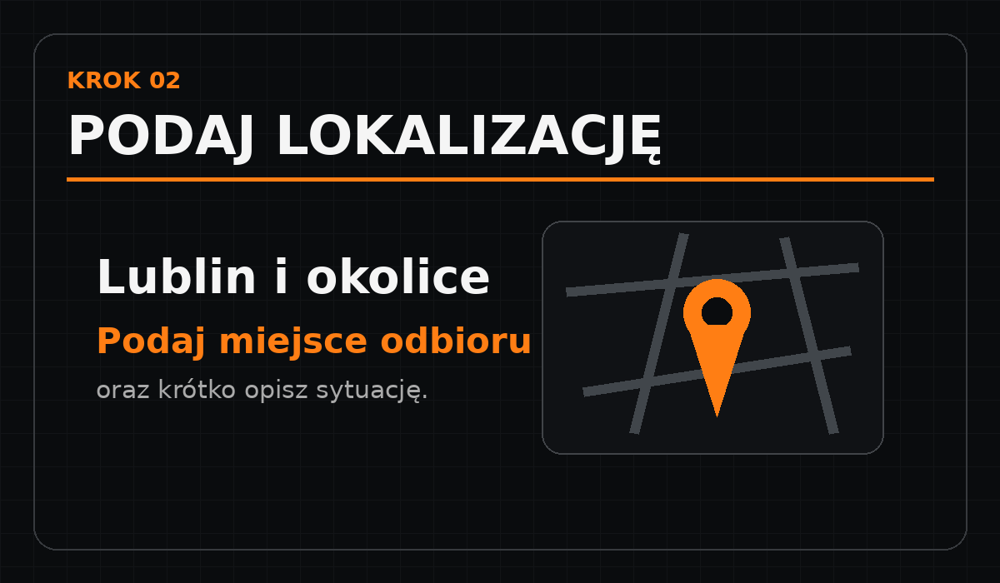
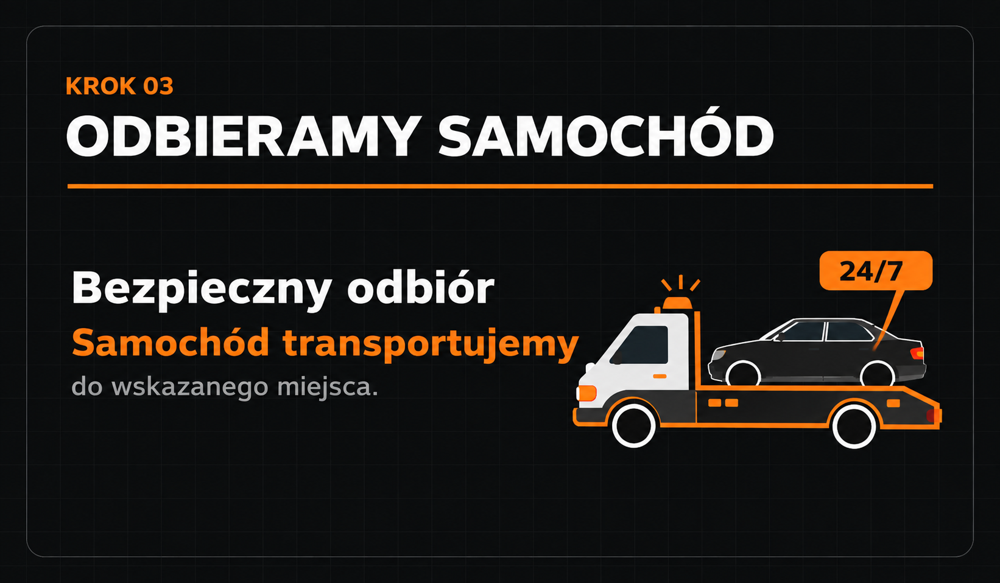
Najważniejsze informacje przed kontaktem z AUTO POMOC.
Tak. Kontakt z AUTO POMOC jest dostępny przez całą dobę, 7 dni w tygodniu.
Tak. Oferujemy holowanie samochodów po wypadkach i kolizjach. Podczas rozmowy ustalimy miejsce odbioru oraz zakres potrzebnej pomocy.
Obsługujemy Lublin i okolice. Przy kontakcie podaj lokalizację, a ustalimy możliwość realizacji transportu.
Samochód możemy przetransportować do wskazanego przez Ciebie miejsca. Szczegóły ustalamy telefonicznie.
Tak. Zadzwoń pod +48 866 126 125, podaj lokalizację i opisz sytuację. Ustalimy dalsze kroki.
Zadzwoń i podaj lokalizację. Ustalimy zakres pomocy oraz miejsce transportu samochodu.